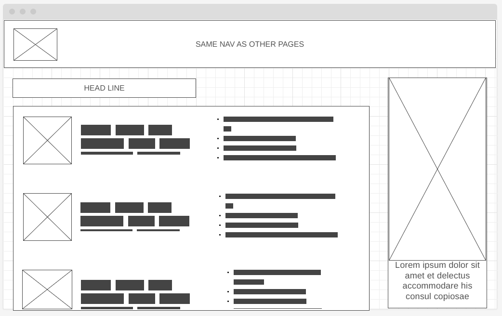
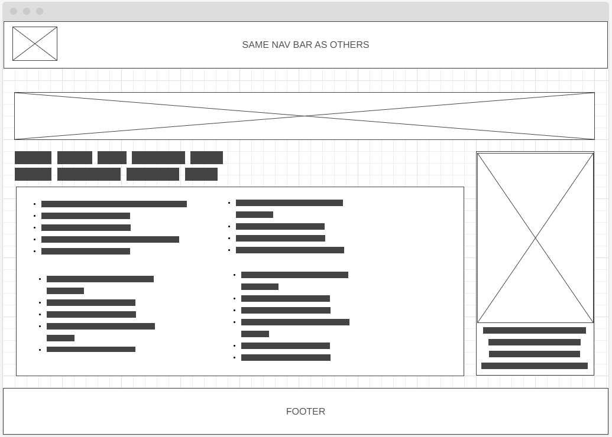

Overview
Purpose
Provide to all the international snack lovers the best combination and quality of repostery at their doorstep with simple and fast shopping windows in all devices
Audience
Young adults, teenagers and kids are the center and target of this page. All snack lovers are included. I want the page to be friendly and easy to go through, this will help the older people with interest in buying snacks from their country of preference, since they are probably the potential buyers.
Branding
Website Logo
Style Guide
Color Palette
Palette URL:
https://coolors.co/palette/db7f67-dbbea1-a37b73-3f292b| Primary | Secondary | Accent 1 | Accent 2 |
|---|---|---|---|
| [#3F292B] | [#DB7F67] | [#A37B73] | [#DBBEA1] |
Typography
Heading Font: Croissant One
Paragraph Font: Ubuntu, Roboto, sans-serif
Normal paragraph example
The best Whitewater Rafting in Colorado, White Water Rafting Company offers rafting on the Colorado and Roaring Fork Rivers in Glenwood Springs. Since 1974, we have been family owned and operated, rafting the Shoshone section of Glenwood Canyon and beyond.
Colored paragraph example
Trips vary from mild and great for families, to trips exclusively for physically fit and experienced rafters. No matter what type of river adventures you are seeking, White Water Rafting Company can make it happen for you.
Navigation
Site Map
Wireframes
Home
The purpose of the home page is to catch the user's attention. This is the one that will have the most images and interactive things. What I want is not only for people to be attracted by the images and how delicious they look, but also how easy is to find what they want. This is the fancy page. The nav bar will be at the top left. It will be a hamburger. The options will appear from the left once the click is pressed. This is because, as I said before, the content is the one that will have all the possible space. Big-sized images will be accompanied by little text boxes explaining what Great Snipe is about. Both explanations and reviews will be displayed. Commonly, people have doubts about the quality of the product, authenticity, and price. The Home page has the responsibility of catching the eye's attention and providing the common information a user searches for. The button "About us" will be the bigger One compared to the others. All the images and text will be aligned like a gallery, showing all types of snacks and places around the world. The footer will have the Contact Us function and will be the main source of company/web page information.

Worldwide Snacks Menu (Ingredients) / Main Topic 2 / Page 2
This is THE MAIN SECOND PART of my website. In this page I Want to create a browsing page that allows the users to search for the food, drinks, and other bakery-related items they want; all by the country. This page will have a couple of small images related to the ones on the Home Page. This will help the users recognize the menu more easily. All of the icons, after clicking, will display the options and a type of menu that will use the whole page to avoid confusion. I want to make this second page as friendly as possible. Every country chosen will have a quick description of the ingredients they usually use to make their food. This is a feature small to no food ordering pages have, all because people commonly search for what they already know. This information, not only for the country but also for the snacks offered by them, is going to give the new snack lovers a little push in the back to search for new and known flavors.
Order Now (All Items) / Main Topic 3 / Page 3
Similar to the second page, The access will be on the home page. The main difference is that this page will not have other "sub"options. A list of all the items will be placed to show all the stock for the page. At the top of the list, is going to be a search bar to classify and reduce the list. This is something that I have on my plans, but not sure if I'm going to be able to complete it. Because this is a web page for a project and not an actual company. I will use a small quantity of items to display. This search bar will help to specify what the users want by country, type, and name. After the search bar, the item will be displayed in alphabetical order. All of them will contain just a quick overview of what it is, from where, and the price to add to the cart. I am planning to get a better description of the product with a button that will open a pop-up window inside or beside the item. This info is also a resume of the one that would be displayed on the second page. This page will be more related to the users who have been here before and the ones who know what they want to buy. This page is meant to be fast, similar to a book index. It will have a simple design one image at the top and one at the bottom, but most of the Order Now will be icons and text.
